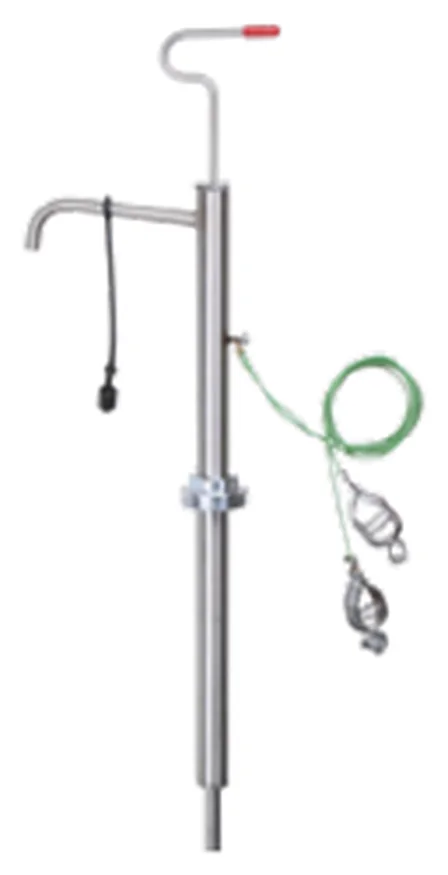

GROZ · Oiling Equipment
Steel Safety Pumps
CAT NR VLP/55/F · ORD NR 44134
| CAT NR (catalogue number) | VLP/55/F |
|---|---|
| ORD NR (order number) | 44134 |
| Box quantity | 10 |
| Suitable for | 205 litre (55 gal) drums |
| Type | Drum Pump |
Open in the catalogue The catalogue PDF, page 133
From the GROZ Fluid Handling CC-07 catalogue. Not yet verified: these details were read from the printed catalogue automatically; check the catalogue page before ordering.